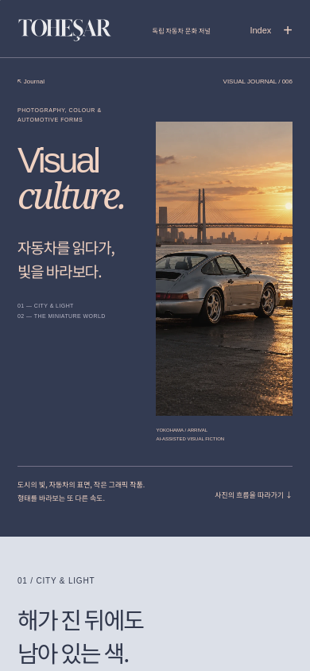
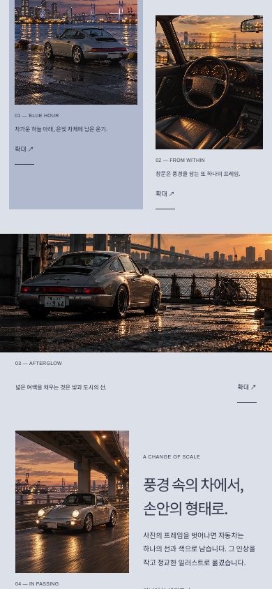
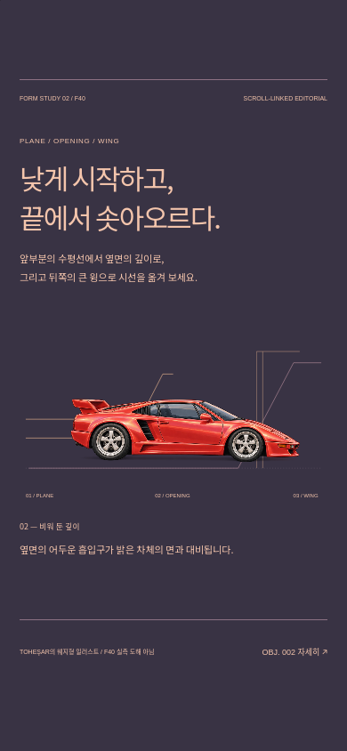
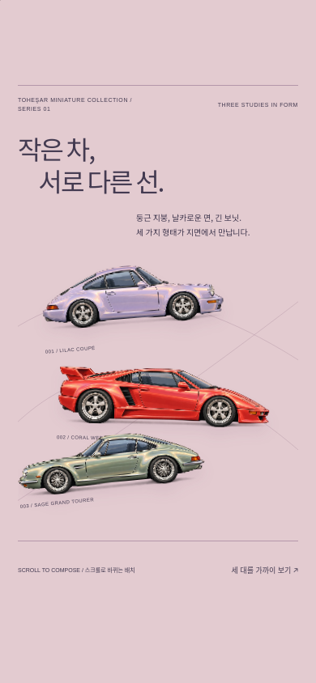
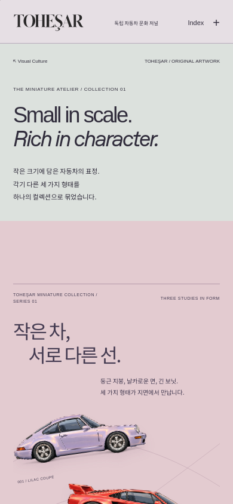

TOHEŞAR / VISUAL CULTURE 006 / REVIEW ROOM
빛과 형태,
그리고 작은 자동차들.
005의 저널을 확장한 006 검토실입니다. 세 대의 일러스트, F40의 수평선·흡기구·윙 모션, 사진의 비율을 살린 Visual Culture, 독립 Miniature Atelier를 확인할 수 있습니다.
Miniature Collection 01


TOHEŞAR 아트 디렉션에 따른 AI 보조 일러스트입니다. 제조사 공식 도해나 실측 자료가 아닙니다. Yokohama 이미지는 AI 보조 비주얼 픽션이며, F40 기사 사진은 MrWalkr / CC BY-SA 4.0의 기존 에셋입니다.
iPhone 비율 / Playwright WebKit











넓은 화면의 구성


검증 기록
Chromium과 Playwright WebKit의 브라우저 엔진 검증입니다. 실제 iPhone Safari 실기기 테스트를 수행했다는 뜻은 아닙니다. 공식 운영 도메인과 기존 커버 프로젝트는 배포 대상이 아닙니다.